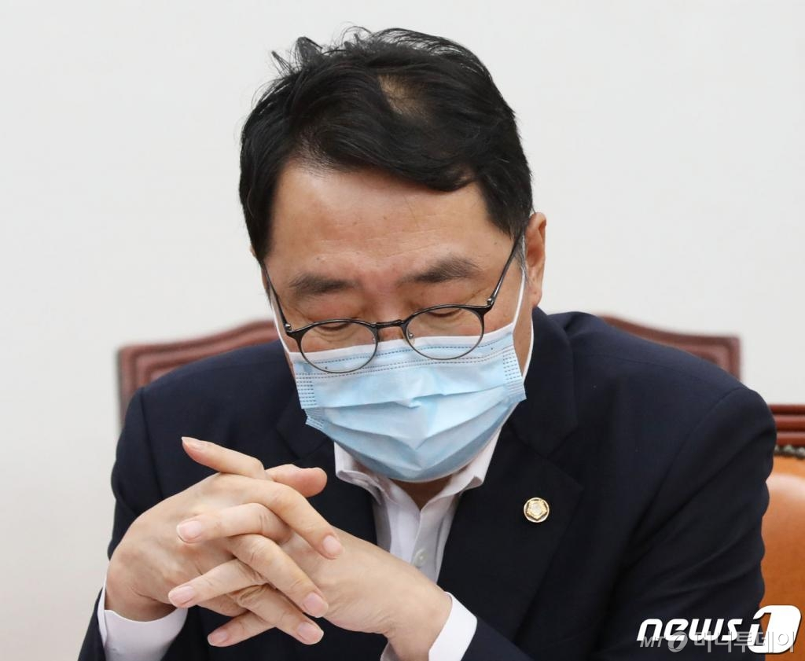

[머니투데이 오문영 기자] 윤영찬 더불어민주당 의원이 지난 9일 오후 서울 여의도 국회에서 열린 더불어민주당 제2기 미래전환 K-뉴딜위원회 제1차 전체회의에서 생각에 잠겨 있다./사진=뉴스1'카카오 뉴스 편집'에 압박을 가하려는 정황이 드러나면서 포털 통제 논란에 휩싸인 윤영찬 더불어민주당 의원이 검찰에 형사고발당했다.
11일 법조계에 따르면 자유대한호국단은 이날 윤 의원을 직권남용 등 혐의로 수사해달라며 대검찰청에 고발장을 제출했다 이들 단체는 "윤 의원이 카카오에 항의하려는 지를 내리고, 심지어 국회로 불러들이라고 한 것은 카카오 측에 의무없는 일을 하게 하거나 정당한 포털로서의 업무 관련 권리를 방해하려는 행위에 충분히 해당한다"고 주장했다.
윤 의원은 지난 8일 국회 본회의장에서 주호영 국민의힘 원내대표의 교섭단체 대표연설을 든던 가운데 관련 기사가 포털사이트 다음 뉴스 메인에 오르자 보좌진에게 "카카오 너무하군요. 강력히 항의해주세요. 들어오라고 하세요"라는 메세지를 보냈다. 이 사실이 사진기자를 통해 알려지자 포털사이트 뉴스 편집 개입 논란이 일었다.
자유대한호국단은 여권 인사들을 잇따라 고발하는 등 보수 성향을 보여온 단체다. 전날에는 이상직 더불어민주당 의원을 공직선거법 위반 혐의로 고발하는가 하면, 지난 1일에는 이인영 통일부 장관과 이정옥 여성가족부 장관 등을 아동복지법 위반 등 혐의로 고발하기도 했다.
지난 8일 오후 서울 여의도 국회에서 열린 본회의에서 주호영 국민의힘 원내대표가 교섭단체 대표연설을 나선 가운데 더불어민주당 한 의원이 주호영 원내대표 연설과 관련해 핸드폰을 하고 있다./사진=뉴스1야권은 네이버 부사장, 청와대 국민소통을 지낸 윤 의원 사건으로 문재인 정부의 언론 장악 실체가 드러났다며 공세를 이어가고 있다. 국민의힘은 전날 '포털장악 대책특별위원회' 구성에 나섰다. 4선 중진인 김기현 의원이 위원장을 맡은 특별위는 이 사건을 드루킹 사건에 버금가는 포털 공작으로 규정했다.
국민의힘은 이날 윤 의원에 대한 사보임을 요청하며 '사임 요구서'를 국회의장실에 전달하기도 했다. 사보임은 국회의원이 소속 상임위 또는 특별위에서 사임토록하고 새로운 상임위 혹은 특별위로 재배치 하는 것을 의미한다.
윤 의원은 논란이 불거지자 "저의 잘못"이라며 사과했다. 그는 지난 9일 본인의 페이스북에서 "여야 대표연설의 포털 노출 과정의 형평성에 의문을 가졌던 것"이라며 "제가 의문을 갖고 묻고자 했던 것은 뉴스 편집 알고리즘의 객관성과 공정성이었다"고 했다.
이어 "보좌진과의 대화라 해도 엄밀한 자세와 적절한 언어를 사용하지 못했다"며 "질책을 달게 받겠다. 이번 일을 커다란 교훈으로 삼아 한 마디 말과 한 걸음 행동의 무게를 새기겠다"고 덧붙였다.
오문영 기자 omy0722@mt.co.kr
▶줄리아 투자노트
▶조 변호사의 가정상담소 ▶머니투데이 구독하기
<저작권자 ⓒ '돈이 보이는 리얼타임 뉴스' 머니투데이, 무단전재 및 재배포 금지>